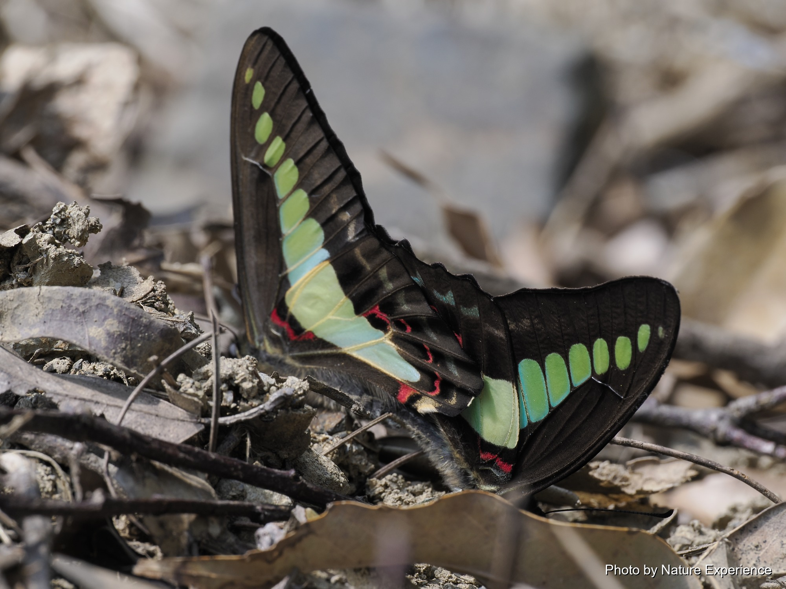
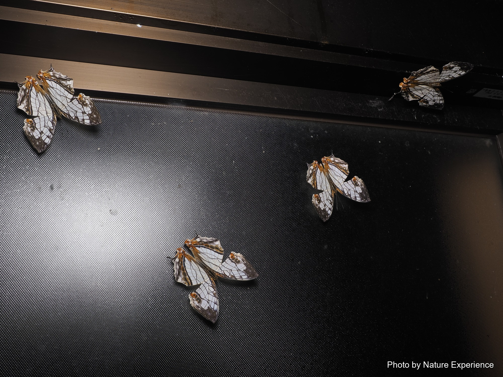
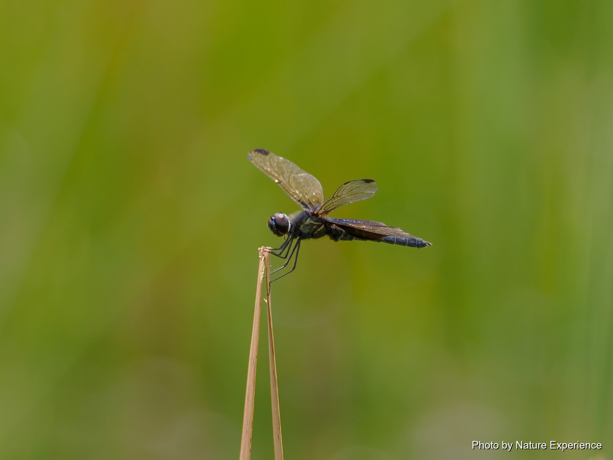
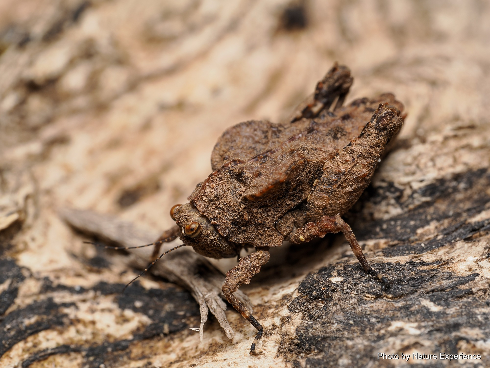
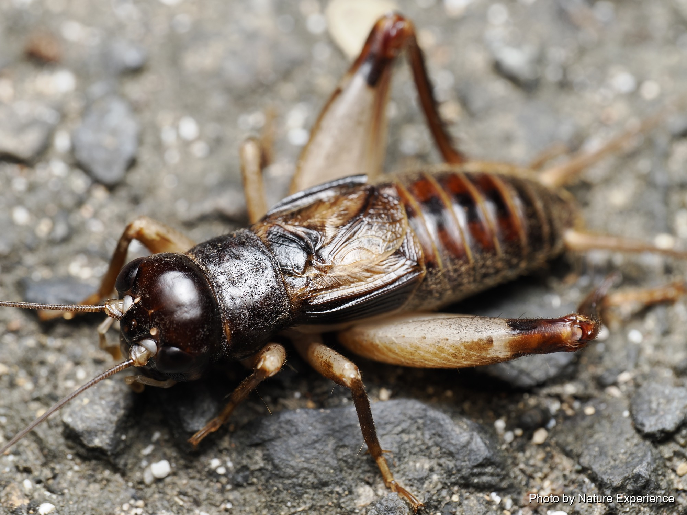
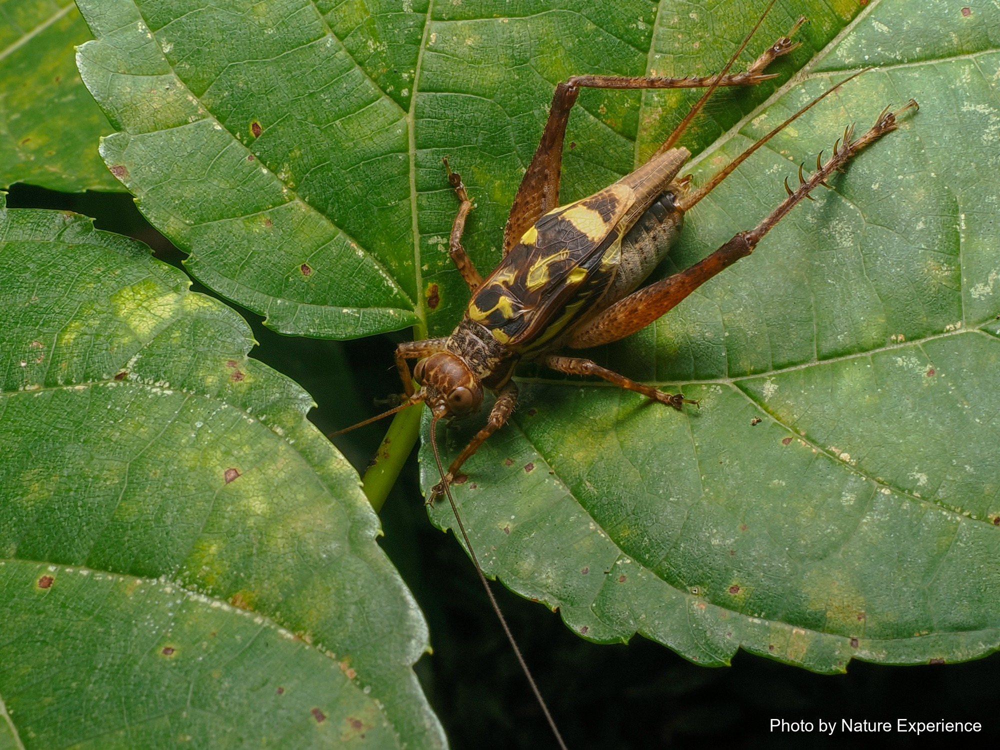
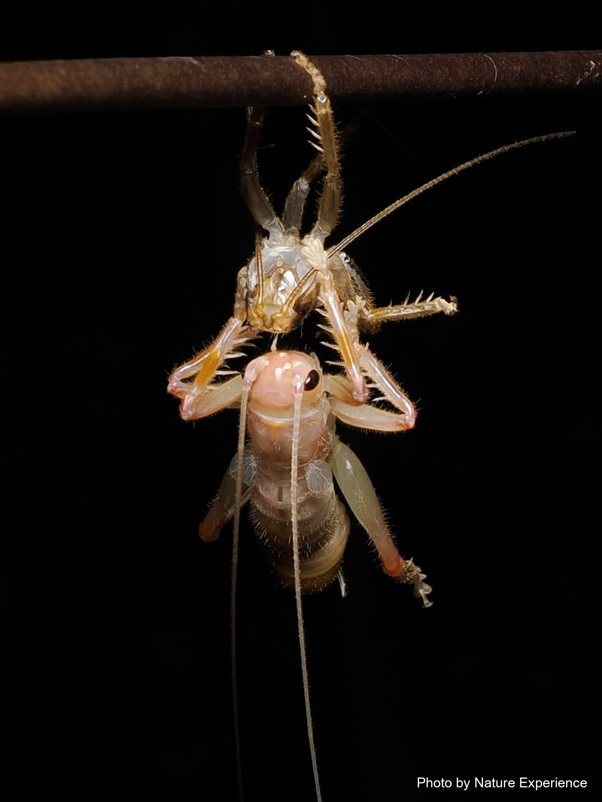
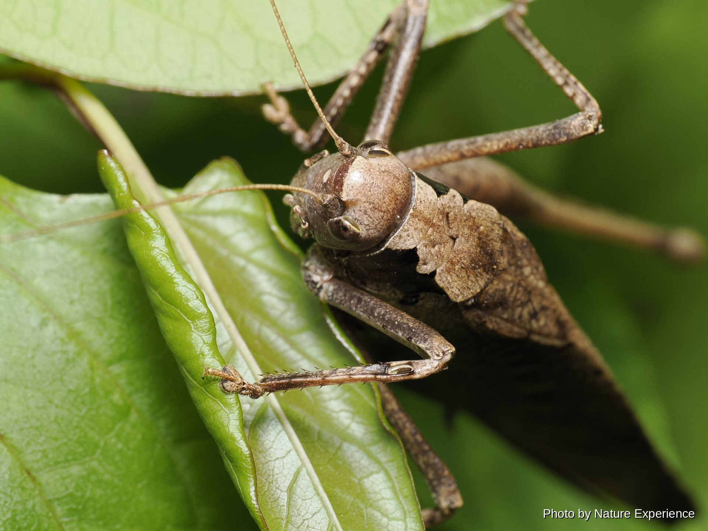

奄美で出会える昆虫その他
チョウの仲間

黒い翅に青緑色の帯が前後の翅を貫くように入る、飛翔の速い美しいアゲハチョウ。クスノキやタブノキなどクスノキ科の樹木を食草とし、奄美大島の島内各地で見られる。年に数回世代を繰り返す多化性で、暖かい時期は長期間にわたって姿を見せる。

白地に黒褐色の亀甲状の模様が広がる、他に類を見ない翅を持つチョウ。紀伊半島以西から南西諸島にかけて分布し、奄美大島でも見られる。幼虫はイヌビワやガジュマルなどクワ科の植物を食べる。成虫のまま越冬し、暖かい時期は春から秋遅くまで世代を繰り返しながら姿を見せる。

淡い水色(浅葱色)の斑紋を持つ、ふわふわと優雅に飛ぶマダラチョウの仲間。奄美大島以南に分布し、幼虫はツルモウリンカを食草とする。気温15度を下回る冬の日には、谷間の樹林内に数百頭単位で集まって集団で越冬する姿が見られ、奄美大島の冬の風物詩として知られている。
トンボの仲間

国内では奄美大島にのみ生息が確認されている希少なトンボ。黒い体に深緑色の光沢を持ち、透明な翅には藍色の紋様が入る。抽水植物の茂る池を好み、オスは水面近くを飛びながらメスを待つ。生息地・個体数が極めて限られることから、種の保存法により国内希少野生動植物種に指定され、捕獲が禁止されている。

チョウトンボの南西諸島に分布する亜種で、奄美大島から沖縄・宮古・八重山諸島にかけて広く見られる。体長は約40mmで、翅にある濃い褐色の斑紋の大きさや形には個体差が大きい。池や水田の周辺を、翅をひらひらとさせながら飛ぶ姿はチョウのようにも見える。
バッタ・コオロギ・キリギリスの仲間(直翅目)

奄美大島・徳之島に分布する日本固有種。体長は雄で10mm前後、雌で14.5mm前後。前胸背板が扁平に広がった姿が特徴で、落ち葉の積もる林床などに生息し、周囲の色合いに紛れる保護色を持つ。動きは素早く、驚くと跳ねて逃げる。

体長31〜35mmとやや大型のコオロギに似た仲間。奄美大島・徳之島をはじめ南西諸島に広く分布し、名前の通り朽木の樹皮の下などに潜んで暮らす。夜になると「グィーー、グィーー」という特徴的な声で鳴く。暖かい地域では季節を問わず、一年を通して成虫の姿が見られる。

名前に「コオロギ」とあるが、分類上はマツムシの仲間。トカラ列島以南の南西諸島の森林に生息し、奄美群島では8月下旬頃から成虫が現れる。樹の幹に昼夜を問わず群れることが多く、「シッ、シッ」という声で鳴く。個体数が多く、爬虫類や鳥類にとって重要な餌にもなっている。

宝島・奄美大島・加計呂麻島に分布する樹上性のコロギスの仲間。体長よりはるかに長い触角を持ち、昼間は自分の出す糸で葉を綴り合わせた巣に潜み、夜になると這い出して活動する夜行性。肉食性が強く、他の昆虫を捕食する。警戒心が強く、なかなか見つけることができない。

伊豆半島以南の暖かい地域に分布するキリギリスの仲間で、奄美大島をはじめ南西諸島でも見られる。夏の終わりから鳴き始め、秋が深まるにつれて「ギュルルルルルー」という騒々しい声で盛んに鳴くようになる。鳴き始めは「ギューッ、ギューッ」と間隔を空けた声だが、次第に途切れない連続音になっていく。